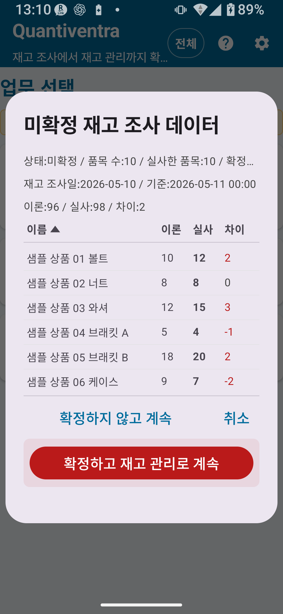

재고 실사 전체 버전에서는 모든 레코드 수 제한이 해제되고, 코드 규칙·위치 규칙·카메라 설정·CSV 확장 등 공통 전체 설정을 사용할 수 있습니다.
대량 상품 관리와 상세 위치 기반 실사 업무에 적합합니다.
✅ 전체 버전에서 추가되거나 사용할 수 있는 기능
- 마스터 데이터·실사 이력·내보내기 레코드 수 제한 해제
- 상세 코드 규칙 설정
- 상세 위치 규칙 설정
- 상세 카메라 스캔 설정
- CSV 확장 내보내기
- 상세 편집
- 화면 회전 잠금(표준 버전 기능 포함)

그림 1-1 실사 확인 화면(전체 버전)
| 기능/설정 | 표준 버전 | 전체 버전 |
|---|
| 마스터 데이터 수 | 최대 300건 | 제한 없음 |
| 실사 이력 레코드 수 | 최대 1,000건 | 제한 없음 |
| 내보내기 레코드 수 | 최대 300건 | 제한 없음 |
| 상세 코드 규칙 설정 | ✗ | ○ |
| 상세 위치 규칙 설정 | ✗ | ○ |
| 상세 카메라 설정 | ✗ | ○ |
| CSV 확장 내보내기 | ✗ | ○ |
| 상세 위치 사용 | ✗(상세 모드 설정은 가능하지만 기능 제한 있음) | ○ |
전체 버전에서는 위치 마스터에 등록한 모든 위치를 재고 실사에서 사용할 수 있습니다. 창고·매장뿐 아니라 선반 번호, 층, 구역 등 세부 위치를 설정해 위치별로 실사할 수 있습니다.
상세 위치 설정 방법
- 설정 → 실사 설정으로 이동해 상세 모드를 선택합니다.
- 마스터 관리 → 위치 마스터로 이동해 필요한 위치를 등록합니다.
- 실사 화면에서 위치 필드를 탭하면 등록된 모든 위치가 선택지로 표시됩니다.
⚠ 주의전체 버전이 활성화되어 있어도 모드가 간단 A/B/C로 설정되어 있으면 간단 위치만 표시됩니다. 등록된 모든 상세 위치를 사용하려면 상세 모드로 전환하세요.
💡 팁상세 위치를 등록했는데도 표시되지 않는 경우, 현재 모드가 간단 A/B/C로 되어 있는지 확인하세요. 상세 위치를 사용하려면 상세 모드로 전환해야 합니다.
전체 버전에서는 재고 실사 CSV 가져오기와 내보내기 확장 기능을 사용할 수 있습니다.
재고 실사 CSV 가져오기 사양
| CSV 종류 | 용도 | 주요 열 | 필수/선택 | 주의 사항 | 사용 가능 플랜 |
|---|
| 재고 실사 CSV(2열) | 기본 실사 마스터 가져오기 | 상품 코드, 상품명 | 필수 2열 | 헤더 없이 첫 행부터 데이터로 처리합니다. | 전체 플랜 |
| 재고 실사 CSV(3열) | 이론 재고가 포함된 실사 마스터 가져오기 | 상품 코드, 상품명, 이론 재고 | 필수 3열 | 실사 수량은 가져오기 시 입력하지 않으며 0부터 시작합니다. | 전체 플랜 |
재고 실사 CSV 내보내기
- 내보내기 파일의 첫 줄에는 선택한 언어에 맞는 헤더가 포함됩니다.
stocktake_summary(실사 합계 CSV)에는 날짜·시간·위치 열이 포함되지 않습니다.- 위치별·날짜별·명세 단위의 상세 출력은 이력 화면의 출력 항목과 생성된 CSV 파일의 내용을 확인하며 사용하세요.
🚨 중요CSV 가져오기와 내보내기는 중요한 데이터에 영향을 줄 수 있습니다. 대량 처리나 데이터 교체 전에 반드시 백업을 내보내고, 확인 화면의 내용을 꼼꼼히 확인하세요.
전체 버전에서는 실사 이력의 건수 제한이 해제되어, 과거의 실사 데이터를 장기간 보관하고 확인할 수 있습니다.
💡 이력 확인 활용실사 결과 확정이나 재고 반영 전에 이력을 검토하면, 잘못 입력한 수량이나 위치를 조기에 발견할 수 있습니다. 정기 실사 후에는 CSV로 내보내 별도로 보관하는 것을 권장합니다.
실사 이력에서 확인할 수 있는 내용
- 저장 일시, 상품 코드, 상품명
- 실사 수량과 위치
- 메모
- 확정 상태(미확정/확정 완료)
전체 버전에서는 입력한 실사 데이터를 확정하는 작업을 실행할 수 있습니다. 확정하면 실사 결과가 공식 기록으로 취급됩니다.
실사 입력부터 확정까지의 흐름
① 실사 데이터 입력: 바코드 스캔 → 수량 입력 → 저장
↓
② 실사 이력 확인: 저장된 항목을 확인하고, 오류가 있으면 앱 화면의 안내에 따라 수정합니다.
↓
③ 실사 결과 확정: 실사 결과를 확정하는 작업을 실행합니다.
↓
④ 재고 반영(선택): 확정된 실사 결과를 재고 관리에 반영합니다.
🚨 확정 버튼에 대해실사 결과 확정은 재고 데이터에 영향을 줄 수 있는 중요한 작업입니다. 확정 버튼은 확인 내용 아래의 별도 위험 영역에 배치되며, 먼저 누르는 기본 버튼으로 취급되지 않습니다. 차이와 대상 데이터를 확인한 뒤 마지막에 실행하세요.
🔍 확정 후 처리확정 후 수정이나 되돌리기 가능 여부는 앱 화면의 안내와 실사 이력을 기준으로 확인하세요. 필요한 경우 백업 CSV와 출력된 이력을 함께 확인해 주세요.
🚨 중요확정 전에 반드시 실사 이력의 내용을 확인하세요. 실행 전에는 확인 화면의 안내를 꼼꼼히 읽어 주세요.
실사 결과를 재고 관리에 반영하면, 재고 수량이 확정된 실사 수량에 맞게 조정됩니다. 차이는 조정 이력으로 기록됩니다.
재고 반영 절차 개요
- 실사 데이터를 입력하고 실사 결과를 확정합니다.
- 재고 반영 작업을 실행합니다.
- 확인 화면에서 반영 내용(차이 조정 내역)을 확인합니다.
- 확인 후 반영을 실행합니다.
- 재고 이력에서 조정 내역을 확인합니다.
🚨 중요재고 반영은 재고 수량을 크게 변경합니다. 실행 전에 반드시 백업 CSV를 내보내세요. 또한 반영 전 확인 화면의 내용을 꼼꼼히 읽은 뒤 실행하세요.
🔍 반영 후 확인재고 반영 후에는 재고 이력과 조정 내역을 확인하세요. 되돌리기나 재처리가 필요한 경우에는 앱 화면 안내와 백업 CSV를 기준으로 확인하는 것이 안전합니다.
🚨 반영 전 반드시 백업재고 반영은 데이터를 크게 변경합니다. 사전에 백업 CSV를 내보내세요(설정 → 전체 데이터 내보내기).
⚠ 확인 화면을 꼼꼼히 읽기확정·반영·삭제·초기화처럼 데이터를 변경하는 작업은 실행 전에 확인 화면의 내용을 꼼꼼히 읽어 주세요.
⚠ 구매 조건 확인법적 고지와 구매 조건은 Google Play Store의 표시를 확인하세요. 이 사용 설명서에서는 가격이나 조건을 단정하지 않습니다.
월별 재고 실사 운영 예
- 월 초에 실사 CSV를 가져와 상품 마스터를 최신 상태로 갱신합니다.
- 실사 설정을 상세 모드로 전환하고 선반·구역별 위치를 준비합니다.
- 바코드를 스캔하면서 실사 수량을 입력하고 저장합니다.
- 실사 이력에서 모든 항목을 확인합니다.
- 문제가 없으면 실사 결과 확정을 실행합니다.
- 백업을 내보낸 뒤 재고 반영 작업을 실행합니다.
- 재고 이력에서 실사 조정 항목을 확인하고, 차이가 있으면 원인을 조사합니다.
- 실사 결과 CSV를 내보내 기록으로 보관합니다.
📌 이 장의 핵심 요약
- 전체 버전에서는 모든 레코드 제한이 해제되며, 상세 위치와 CSV 확장 기능을 사용할 수 있습니다.
- 상세 위치를 사용하려면 설정 → 실사 설정에서 상세 모드로 전환하세요.
- 실사 결과 확정 → 재고 반영 흐름은 데이터를 크게 변경하므로 신중하게 진행하세요.
- 재고 반영 전에는 반드시 백업 CSV를 내보내세요.
🔍 사용 전 확인 사항
- 실사 결과 확정과 재고 반영은 재고 수량과 이력에 영향을 주는 중요한 작업입니다. 실행 전 확인 화면의 내용을 우선해 확인하세요.
- 저장 후 수정이나 확정 후 처리가 필요한 경우, 앱 화면 안내와 실사 이력을 기준으로 확인하세요.
- 재고 반영 후에는 재고 이력과 조정 내역을 확인하고, 필요하면 백업 CSV와 비교하세요.
- 위치별·날짜별·명세 단위 CSV는 출력 화면과 생성된 CSV 파일의 열을 확인하며 사용하세요.